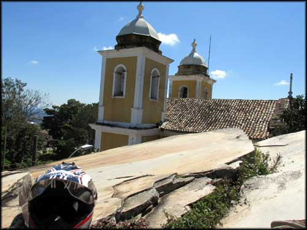
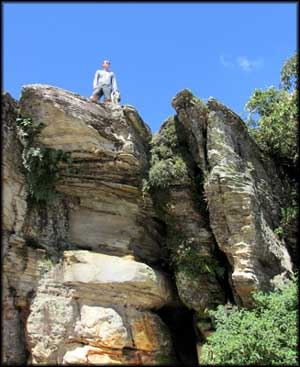
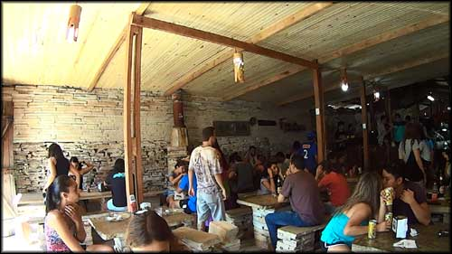
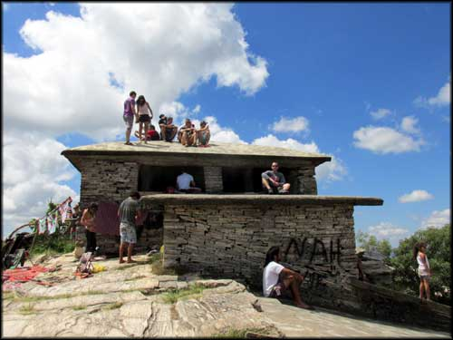
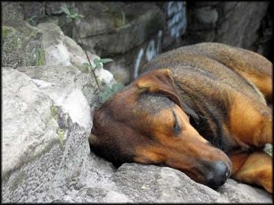
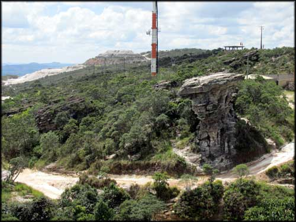
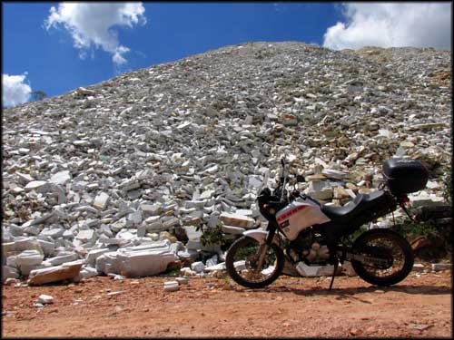
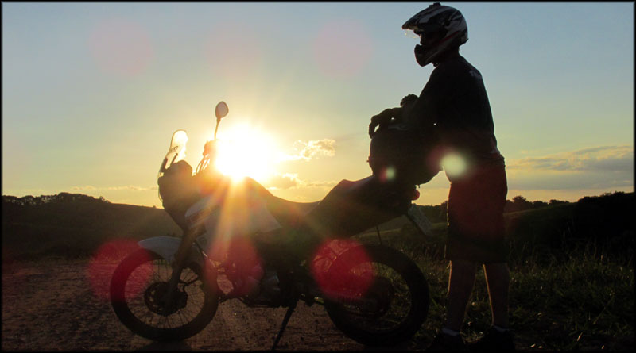
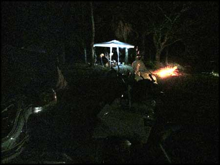
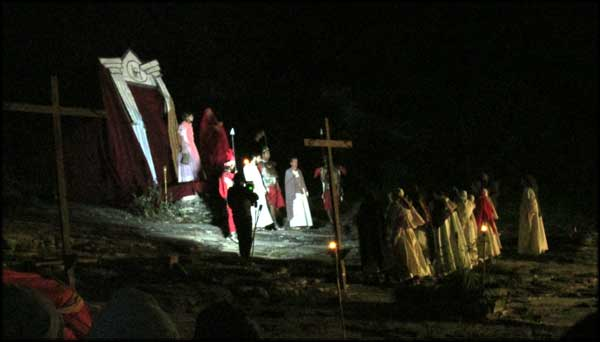

Mesa do café da manhã da Pousada Souza Reis. Suficiente.
Continuando a trip Passeio São Thomé das Letras, nesse dia não acordamos muito cedo, precisava descansar a carcaça para poder aproveitar as cachoeiras e trilhas da região, depois da cansativa mas divertida aventura para chegar em São Thomé. Saímos do quarto apenas a tempo do café da manhã na Pousada Souza Reis.
O café da manhã não tinha nada de especial, principalmente quando esperamos algumas das famosas guloseimas de Minas Gerais. Até tinha bolo e pão de queijo, mas não muito bons. Um sanduíche de queijo e presunto foi o suficiente para iniciar o dia, entretanto.
Após o café, saímos de moto. Eu não tinha mapa da cidade ainda, não sabia aonde ir, então paramos na praça central da Igreja Matriz.
Gruta São Thomé
Sobre a Gruta de São Thomé, vista da torre da Igreja Matriz.
Primeiro conhecemos a Gruta São Thomé, uma formação de rocha formando uma pequena caverna, agradável de se visitar. Pela lateral se sobe no topo da gruta, de onde se tem uma bela vista da cidade e montanhas, e das torres da Igreja Matriz.
No topo da Gruta São Thomé.
Após essa breve visita, voltamos para a praça, para nos informar sobre as demais atrações. Descobri um centro de informações aos turistas, local onde nos deram um mapa com as cachoeiras e pontos turísticos da região.
Já era por volta de 12:00, então resolvemos almoçar antes de sair para explorar o novo mapa. E achamos um restaurante com comida a quilo, chamado Monalisa. Era inteiramente feito de pedras, inclusive os bancos e mesas, e tinha um ambiente legal.
Restaurante Monalisa, todo feito em pedras, bem legal.
Ficamos por lá mesmo. A comida era razoável, mas o preço também, então vale a indicação. Enquanto almoçávamos, sentados à mesa próxima da porta, várias abelhas orbitavam sobre nossas bebidas. Até que um cachorro de rua chegou, e começou a caçá-las. Cachorro devorador de abelhas, veja só, foi bem engraçado.
Alimentados, fomos para a moto, hora de turistar e finalmente tomar banho de cachoeira.

O cão devorador de abelhas
Pirâmide, Cruzeiro, Pedra da Bruxa
Primeiro fomos até a famosa Pirâmide, e o morro do Cruzeiro. O visual é bem bacana, e ficamos um tempo por lá só admirando.A Pirâmide, uma casa de pedras com o formato do nome, obviamente, é uma construção bem legal. Estava tomada de gente, sobre o teto, ao redor.
Um cara tocava violão, um rock acústico. O clima era leve, a não ser quanto aos muitos turistas que estavam no local consumindo drogas. Por isso tiramos fotos, e rapidamente enjoamos de ficar por lá. Voltamos para o lado, próximo ao Cruzeiro, para contemplar mais um pouco o visual.
Casa Pirâmide, tem excelente vista 360º da região.
 Vida boa...

Vista do Cruzeiro, ao lado da Pirâmide
Após aproveitar, fazer fotos e vídeos, voltamos pra pegar a moto e partir para desbravar as trilhas e cachoeiras.
Pedra da Bruxa, ao lado da estradinha aonde passamos depois procurando trilhas
Começamos pegando uma pequena estrada de chão que vi que contornava a Pedra da Bruxa. Um off road fácil, mas por dentro de uma região agradavelmente arborizada, que amenizava a força do sol a pino daquela hora.

Pequena estrada de chão que passa pela Pedra da Bruxa, acaba na rodovia
No fim da estrada de chão, uma montanha de pedras São Thomé extraídas
No fim da rua de terra, chegamos na estrada de asfalto novamente. Havia algumas montanhas das famosas pedras São Thomé que foram extraídas dos morros da região. Acredito que gerações futuras terão menos chances de experimentar como era a geografia local, que vai se esvaindo com a ação predatória do homem.
Vale das Borboletas

Rio após cachoeira Vale das Borboletas
Continuamos pela estrada, e chegamos na saída pra uma rua de terra, que levava até a entrada da cachoeira do Vale das Borboletas. Após rodar alguns minutos, achamos a entrada. Há um terreno usado como estacionamento no início da trilha a pé, e lá deixamos a moto.
Já desde que passamos a ir a pé, dividimos espaço com muitas pessoas, famílias com crianças, e até animais de estimação. A trilha é curta e fácil. Chegamos rápido na cachoeira, que estava apinhada de gente.

Vale das Borboletas
Com o sol forte, e a área da queda d’água tomada de pessoas, fomos um pouco mais pra baixo, e aproveitamos as sombras das árvores que cercam o rio originado pela cachoeira.
Mas já estava chato, muita gritaria, muita farofa, e o objetivo era descansar a cabeça, quanto meno barulho melhor. Decidimos voltar pra moto e procurar outro point, de repente um lugar mais afastado da cidade estivesse menos congestionado.

Queda d'água no Vale das Borboletas. Água estava pouca, pessoas estavam em excesso...
E seguimos, passando em meio a plantações de café, muito bonito. Fomos rodando pela estrada de chão, até que vi uma bifurcação, e achamos uma passagem de rio, com uma piscina natural.

Estrada em meio a fazenda, cafezais

Vista ao longe dos morros de São Thomé
Estava vazio, à exceção de umas pessoas em uma pick up com o rádio ligado no último volume, tocando alguma música sertaneja sobre alguém que sofre, algo assim. Quando nos viram, abaixaram o volume. Mas depois perderam a inibição e aumentaram novamente.
Já estava perto do sol se por, e o vento começou a ficar mais frio, não dava mais vontade de ficar mergulhado na água, então, começamos a voltar.

Acho que seria a Cachoeira da Ricarda. Não tenho certeza.
Pneu furado, novas amizades
Em algum momento na volta, optei por seguir uma outra estrada de terra. Agora já não lembro bem, não havia placas sinalizando nada por lá. E seguimos por essa estrada, até o sol começar a se por. Por do sol na estrada vicinal entre fazendas
E assim foi. Começou a escurecer. Vamos voltar pra cidade.
Comecei a voltar, em direção ao Vale das Borboletas. Depois de alguns minutos, percebo a moto estranha. Instável. Parei, olhei. Pneu traseiro furado. E o inteligente aqui deixou o produto para reparar pneus na pousada. E não havia ninguém por perto. Nem casas. Nem nada. Era só plantação de café, por todos os lados.
Primeiro tentei seguir com o pneu furado mesmo, mas o pneu começou a querer se desencaixar do aro. Pedi a garupa para ir andando, aliviar o peso na moto. Fui sozinho, jogando o peso pra frente, pro tanque. Não adiantou, o pneu estava zoando e achei que iria rasgar.
Fui então com a moto ligada, mas sem estar sobre ela, ao lado, guiando apenas. E lá fomos, cansativamente. A noite caiu. Continuamos. E seguimos, caminhando e empurrando a moto, até que passamos ao lado de um terreno com pessoas acampadas. Perguntei se poderia deixar a moto lá para buscar no dia seguinte. Era uma galera de São Paulo. Disseram que sim, e inclusive eles estavam em dois carros e iriam para a cidade mais tarde, se quiséssemos carona.
Camping próximo ao Vale das Borboletas, onde fomos acolhidos pela galera de São Paulo, que lá estava acampando
Obviamente aceitei. Sem graça, mas aceitei, estava bem longe da cidade ainda. E também aceitei a cerveja que me ofereceram. E carne do churrasco que faziam. Ficamos lá conversando, pessoal gente boa, foi divertido.
Até que eles resolveram ir pra cidade, e pegamos essa carona. Nos deixaram na praça, e seguimos pro hotel, para o merecido banho.
Mais tarde fui no mercadinho e comprei algumas cervejas para entregar ao pessoal de sampa, era o mínimo que poderia fazer. Eles disseram que estariam na pirâmide, e nós iríamos pra lá também, ver a apresentação teatral da crucificação.
Encenação da crucificação de Cristo, no morro da Pirâmide
Chegamos lá, bem cheio, não encontramos o pessoal de SP. Assistimos o teatro, foi bem legal, altas produções. Quando acabou a peça, e acabou a garrafa de vinho que levamos, voltamos para o hotel. Com as cervejas não entregues.
Hora de descansar.
Continua no próximo artigo… Passeio em São Thomé das Letras parte Final.